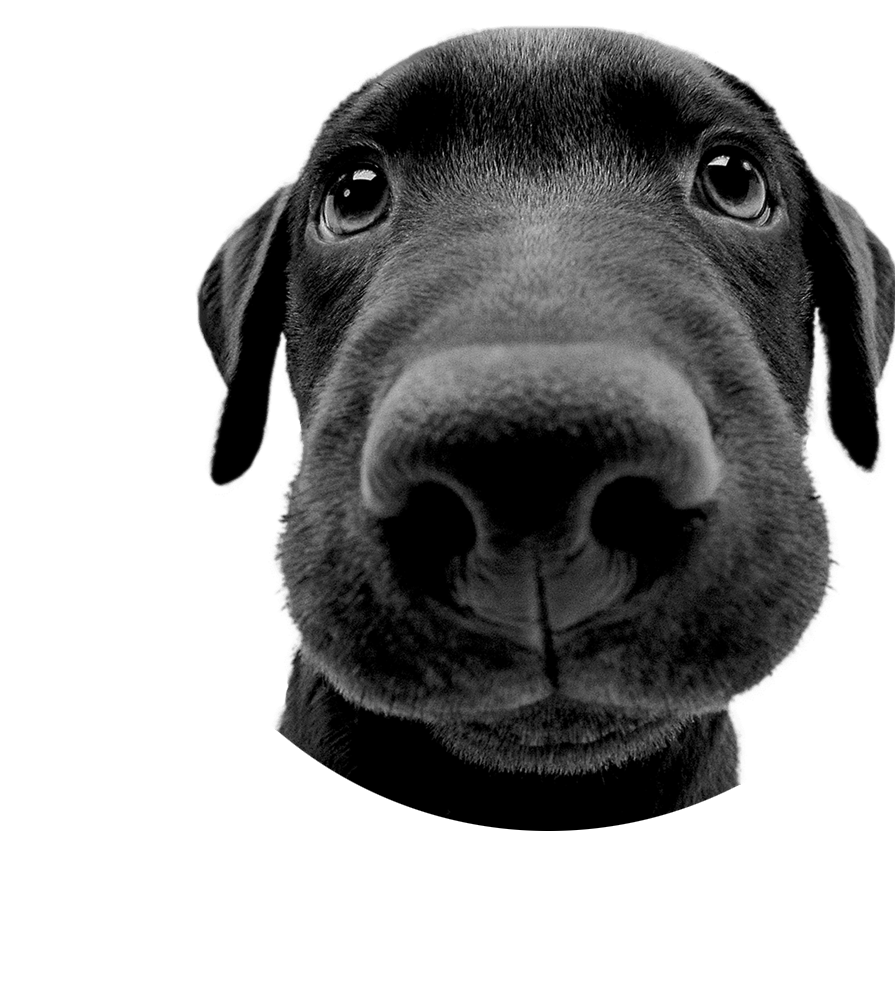

THE DOG
AND FRIENDS
FOFINHOS. ZOIUDINHOS.
LENTE OLHO DE PEIXE.

Quem são?
The Dog and Friends é uma franquia japonesa criada pela empresa
Artlist International no começo dos anos 2000.
O projeto começou com a série The Dog, que usava uma
lente especial (olho de peixe)
para tirar fotos de cachorrinhos com
cabeças grandes e
expressões fofas.